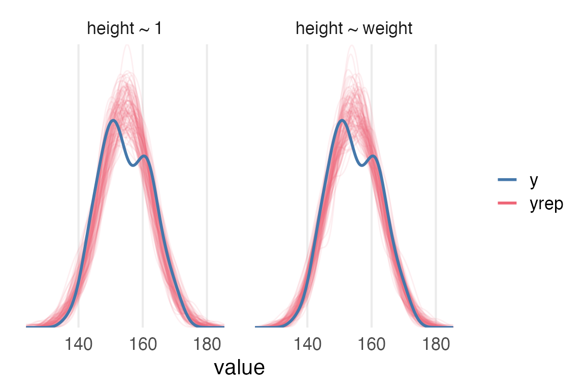

library(tidyverse)
library(tidybayes)
library(gt)
library(brms)
library(marginaleffects)
library(broom.mixed)
source(here::here("_defaults.R"))
Listening
Loading
The plan
Part of why I’m working through Statistical Rethinking as a blog is so that I can take some time and mess around with finessing how I’ll visualize and report models like this, so I’m going to try to work over these basic models I just fit.
Data loading, prep, and model fits
read_delim(
"https://raw.githubusercontent.com/rmcelreath/rethinking/master/data/Howell1.csv",
delim = ";"
) ->
Howell1stable_height <- Howell1 |>
filter(age >= 30)
stable_height |>
mutate(
weight0 = weight-mean(weight)
)->
height_to_mod
height_mod
height_formula <- bf(
height ~ 1
)c(
prior(
prior = normal(178, 20),
class = Intercept
),
prior(
prior = uniform(0,50),
lb = 0,
ub = 50,
class = sigma
)
) ->
height_mod_priorsbrm(
height_formula,
prior = height_mod_priors,
family = gaussian,
data = stable_height,
sample_prior = T,
save_pars = save_pars(all = TRUE),
file = "height_mod.rds",
file_refit = "on_change"
) ->
height_mod
height_weight_mod
height_weight_formula <- bf(
height ~ 1 + weight0
)height_weight_priors <- c(
prior(
prior = normal(178, 20),
class = Intercept
),
prior(
prior = uniform(0,50),
lb = 0,
ub = 50,
class = sigma
),
prior(
prior = normal(0,10),
class = b
)
)brm(
height_weight_formula,
prior = height_weight_priors,
data = height_to_mod,
file = "height_weight_mod.rds",
save_pars = save_pars(all = TRUE),
file_refit = "on_change"
) ->
height_weight_modFirst look - Model Fit
Posterior predictive check
First I’ll go with the default type of pp_check()
pp_check(height_mod, ndraws = 100)+
khroma::scale_color_bright()+
labs(
color = NULL,
title = "height ~ 1"
)+
theme_no_y()
height~1 modelSo, the distribution of posterior predictions for the intercept only model puts a lot of probability where there’s an actual dip in the original data.
pp_check(height_weight_mod, ndraws = 100)+
khroma::scale_color_bright()+
labs(
color = NULL,
title = "height ~ weight"
)+
theme_no_y()height ~ weight model.\(R^2\)
Let’s get some goodness of fit parameters. {brms} / {rstantools} have bayes_R2() which cites Gelman et al. (2019). Classic \(R^2\) is \(1-\frac{\text{residuals variance}}{\text{data variance}}\). As Gelman et al. (2019) point out, there’s no one set of residuals, since the model parameters are all distributions rather than point estimates, so they propose an \(R^2\) for Bayesian models as \(\frac{\text{variance of fitted values}}{\text{variance of fitted values} + \text{variance of residuals}}\), for sampled fitted values and their respective residuals.
But, as they say
A new issue then arises, though, when fitting a set of a models to a single dataset. Now that the denominator of \(R^2\) is no longer fixed, we can no longer interpret an increase in \(R^2\) as a improved fit to a fixed target.
I’m glad I read the paper!
Anyways, height_mod has an \(R^2\) of 0, as it should as an intercept only model.
bayes_R2(height_mod) Estimate Est.Error Q2.5 Q97.5
R2 0 0 0 0I had to think for a second about how this made sense, but as an intercept only model, the predicted values for the data will be just a single number, equal to the intercept \(\mu\).
predictions(
height_mod
) |>
posterior_draws() ->
height_fitted
height_fitted |>
filter(drawid == "1") |>
slice(1:6) |>
rmarkdown::paged_table()I computed \(R^2\) by hand here. I’m a bit lost why the variance of the residuals is identical for every draw…
height_fitted |>
mutate(resid = height - draw) |>
group_by(drawid) |>
summarise(
var_fit = var(draw),
var_resid = var(resid)
) |>
mutate(bayesr2 = var_fit/(var_fit+var_resid)) |>
slice(1:6) |>
rmarkdown::paged_table()The \(R^2\) for the height~weight model is about 0.57
bayes_R2(height_weight_mod) Estimate Est.Error Q2.5 Q97.5
R2 0.572246 0.02644878 0.5143232 0.618783Let’s try calculating that “by hand” again.
predictions(
height_weight_mod
) |>
posterior_draws() |>
mutate(resid = height - draw) |>
group_by(drawid) |>
summarise(
var_fit = var(draw),
var_resid = var(resid)
) |>
mutate(bayesr2 = var_fit / (var_fit + var_resid)) |>
mean_qi(bayesr2)# A tibble: 1 × 6
bayesr2 .lower .upper .width .point .interval
<dbl> <dbl> <dbl> <dbl> <chr> <chr>
1 0.572 0.514 0.619 0.95 mean qi Cool. We can get this all from bayes_R2() also.
bayes_R2(height_weight_mod, summary = F) |>
as_tibble() |>
ggplot(aes(R2))+
stat_slab()+
scale_y_continuous(
expand = expansion(mult = 0)
)+
xlim(0,1)+
labs(
x = expression(R^2)
)+
theme_no_y()
loo
Ok… Time to understand what loo() does, and what elpd means. Doing my best with Vehtari, Gelman, and Gabry (2016)
- elpd
-
Expected Log Pointwise Predictive Density (we lost a “p” somewhere).
Starting with lpd (log pointwise predictive density). So \(p(y_i|y)\) is the probability of a data point \(y_i\) given the distribution of data \(y\). We log it, probably to keep things computable and addition based, and sum it up across every datapoint, \(\sum \log p(y_i|y)\). This is apparently equal to \(\sum \log \int p(y_i|\theta)p(\theta|y)d\theta\).
\(p(y_i|\theta)\) = the probability of each data point given the model
\(p(\theta|y)\) = the probability of the model given the data.
Ok, but \(p(y_i | y)\) is derived from probabilities over models that had seen \(y_i\). \(p(y_i|y_{-i})\) is the probability of data point \(y_i\) derived from a model that had not seen \(y_i\), a.k.a. “leave one out”. ELPD is the summed up log probabilities across these leave-one-out models.
As best as I can tell, the rest of the paper is just about getting very clever about how to approximate \(\sum \log p(y_i|y_{-i})\) without needing to refit the model for each datapoint. It’s this cleverness that will sometimes result in a warning about “Pareto k estimates”
So, without any further ado:
loo(height_mod)
Computed from 4000 by 251 log-likelihood matrix
Estimate SE
elpd_loo -874.6 8.9
p_loo 1.7 0.2
looic 1749.2 17.8
------
Monte Carlo SE of elpd_loo is 0.0.
All Pareto k estimates are good (k < 0.5).
See help('pareto-k-diagnostic') for details.So, if the leave-one-out probability of each data point was higher, the elpd_loo value would be closer to 0, aka exp(0)= 1.
loo(height_weight_mod)
Computed from 4000 by 251 log-likelihood matrix
Estimate SE
elpd_loo -768.9 12.9
p_loo 3.2 0.6
looic 1537.7 25.8
------
Monte Carlo SE of elpd_loo is 0.0.
All Pareto k estimates are good (k < 0.5).
See help('pareto-k-diagnostic') for details.To compare the two models:
loo_compare(
loo(height_mod),
loo(height_weight_mod)
) elpd_diff se_diff
height_weight_mod 0.0 0.0
height_mod -105.8 12.7 So, the height-only model has a worse elpd. And we can be pretty sure it’s a worse elpd, because dividing it by the standard error of the difference is about -8, which according to the Stan discussion forums is a pretty big difference.
Wrapping it into a report
Posterior predictive checks of both models show considerable bimodality is not sufficiently captured by either the intercept-only model or the weight model.
Code
posterior_predict(height_mod) |>
as.data.frame() |>
mutate(.draw = row_number()) |>
slice(1:100) |>
pivot_longer(-.draw) |>
mutate(model = "height ~ 1")->
height_pp
posterior_predict(height_weight_mod) |>
as.data.frame() |>
mutate(.draw = row_number()) |>
slice(1:100) |>
pivot_longer(-.draw) |>
mutate(model = "height ~ weight")->
height_weight_pp
height_to_mod |>
mutate(model = NULL)->
orig
bind_rows(height_pp, height_weight_pp) |>
ggplot(aes(value))+
stat_density(
aes(color = "yrep", group = .draw),
fill = NA,
position = "identity",
geom = "line",
alpha = 0.1
)+
stat_density(
data = orig,
aes(x = height, color = "y"),
fill = NA,
geom = "line",
linewidth = 1
)+
scale_y_continuous(expand = expansion(mult = 0))+
labs(
color = NULL
)+
facet_wrap(~model)+
theme_no_y()
Code
bayes_R2(height_weight_mod, summary = F) |>
as_tibble() |>
mean_hdci(.width = 0.95) ->
mod_r2The intercept-only model necessarily has an \(R^2\) of 0. Mean Bayesian \(R^2\) for the weight model is 0.57 (95% highest density interval of [0.52, 0.62]).
Table 1 displays model comparisons using Leave-One-Out Expected Log Pointwise Predictive Distribution (ELPD) (Vehtari, Gelman, and Gabry 2016).
Code
loo_compare(
loo(height_mod),
loo(height_weight_mod)
) |>
as.data.frame() |>
rownames_to_column() |>
mutate(
model = case_when(
rowname == "height_mod" ~ "height ~ 1",
rowname == "height_weight_mod" ~ "height ~ weight"
)
) |>
select(model, elpd_diff, se_diff) |>
mutate(ratio = elpd_diff/se_diff) |>
gt() |>
fmt_number() |>
sub_missing() |>
cols_label(
elpd_diff = "ELPD difference",
se_diff = "difference SE",
ratio = "diff/se"
)| model | ELPD difference | difference SE | diff/se |
|---|---|---|---|
| height ~ weight | 0.00 | 0.00 | — |
| height ~ 1 | −105.75 | 12.66 | −8.35 |
Table 1:
Leave-One-Out Expected Log Pointwise Predictive Distribution comparsion of the two models. ELPD difference contain the difference from the largest LOO ELPD.
Next time:
Writing up a report on the actual parameters.
References
Gelman, Andrew, Ben Goodrich, Jonah Gabry, and Aki Vehtari. 2019. “R-Squared for Bayesian Regression Models.” The American Statistician 73 (3): 307–9. https://doi.org/10.1080/00031305.2018.1549100.
Vehtari, Aki, Andrew Gelman, and Jonah Gabry. 2016. “Practical Bayesian Model Evaluation Using Leave-One-Out Cross-Validation and WAIC.” Statistics and Computing 27 (5): 1413–32. https://doi.org/10.1007/s11222-016-9696-4.